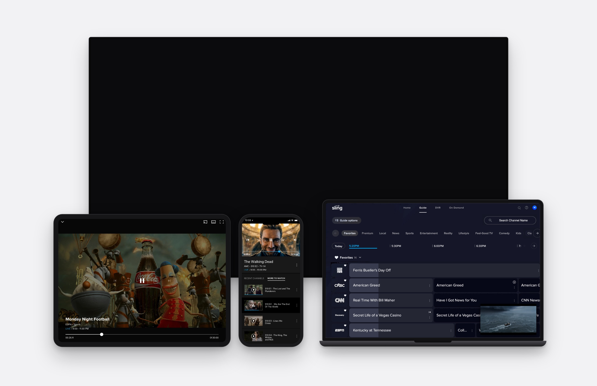
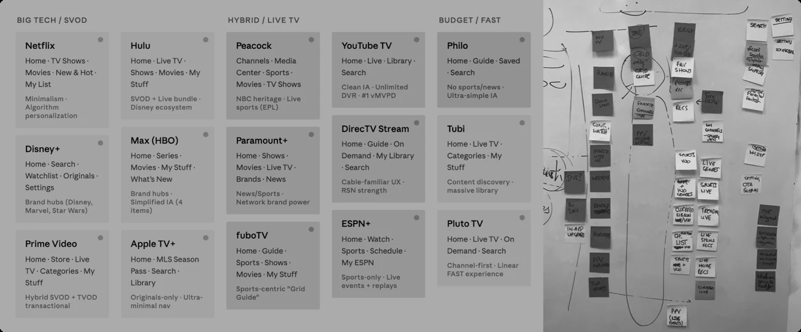
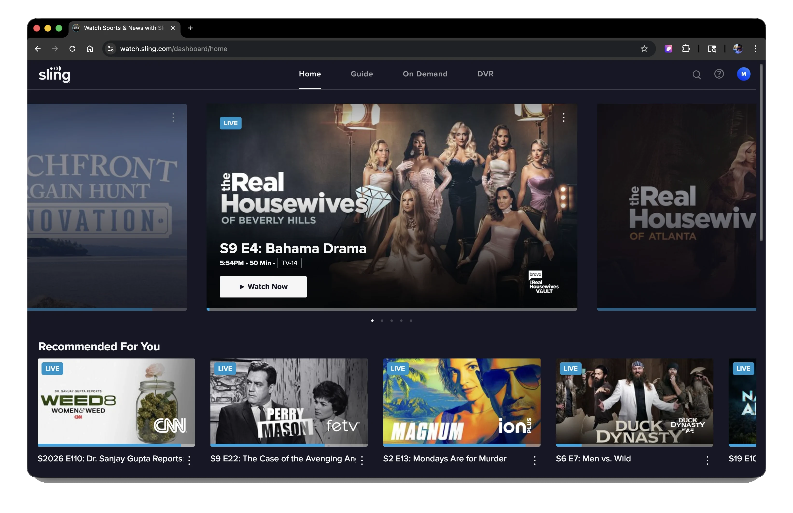
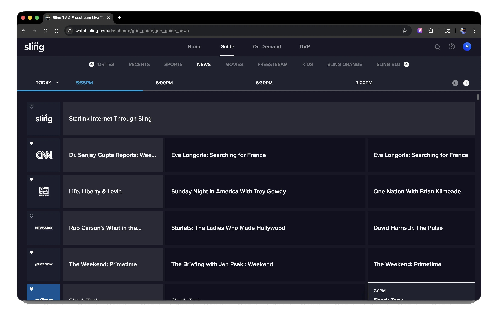
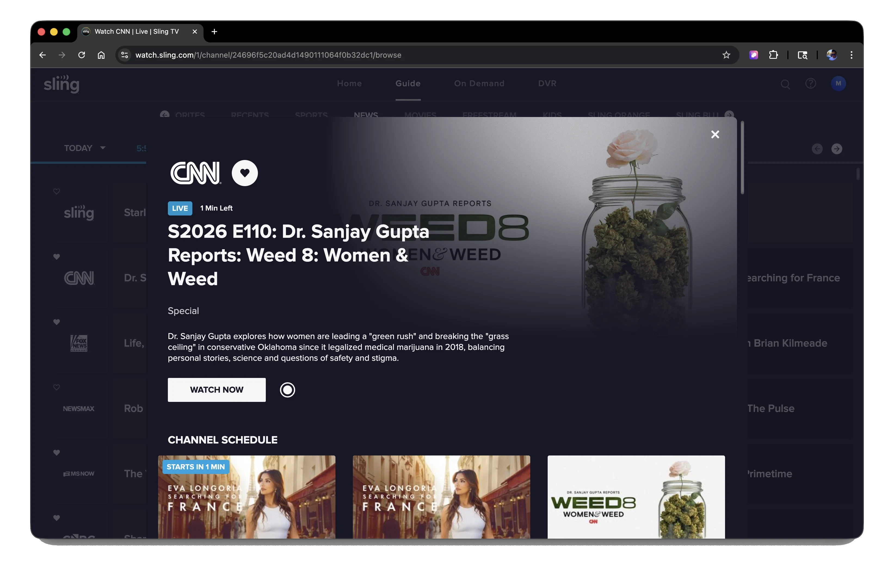
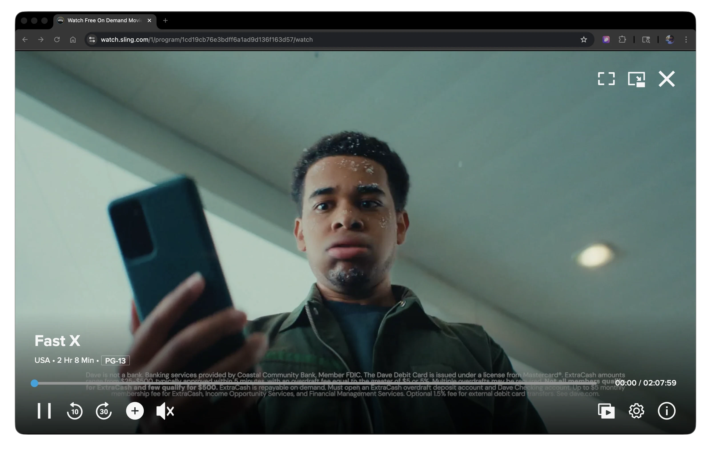

Sling Experience Overhaul.
Redesigning Sling’s core experience across TV, mobile, and web in 18 months.

Nearly every media company launched its own streaming service, and Sling’s leadership wanted a better app experience to compete on more than content.
Content lived in overlapping destinations with no clear rules, so users fell back on Guide or Search. A dated interface and inconsistent program details also made it harder to decide what to watch.
Based on the research, I prioritized clearer navigation, more relevant discovery, and keeping browsing connected to playback. I defined a shared foundation and led four teams to build on it in parallel.
Launched on Roku within a year and on all platforms within 18 months.
Growing competition made the app experience a priority.
Sling, a pioneer in live TV streaming, served 2.5M+ subscribers across 15+ devices. As more streaming services entered the market, Sling’s leadership saw the need for a better app experience. The interface felt outdated, and users frequently struggled to find the content they wanted, especially on-demand.
At the same time, leadership was exploring free, ad-supported viewing as another growth opportunity, which I cover in the Sling Freestream case study.
The core experience made content hard to find.
As Sling grew, new features were added without a clear navigation structure. Users struggled to find live and on-demand content, and many weren’t even aware of what was available beyond the Guide.
Legacy patterns no longer matched user expectations.
Sling’s legacy interface made content harder to understand, while competitors offered clearer navigation and richer content presentation.


Make Sling easier to use, so engagement could turn into growth.
We aimed to create a simpler, more intuitive experience across TV, mobile, and web, helping users find content faster, watch more, and return more often.

I looked at the problem from every angle.
I gathered and reviewed existing research and analytics from teams across Sling, then conducted user interviews, surveys, and competitive analysis. Across these sources, I identified recurring friction.
Multiple signals pointed to the same four friction patterns.
Wayfinding — Where do I go?
Overlapping destinations made it hard to know where to go, so users used Guide or Search instead.
Choice overload — What should I watch?
Rows of irrelevant content made it harder to decide what to watch.
Unclear relevance — Why is this for me?
Recommendations felt generic and unclear, so users browsed on their own.
Interrupted viewing — How do I get back?
Browsing often pulled users out of playback and made it hard to return.
See the evidence behind each pattern
| Wayfinding breaks down | Choice overload slows discovery | Relevance isn’t the default | Exploration interrupts viewing | |
|---|---|---|---|---|
| Interview | Users felt lost across surfaces — the app worked differently on each device | Users gave up browsing before finding something to watch | Recommendations felt random, not personal — users ignored them | Users expected to browse while watching, like channel-surfing on cable |
| Survey | 42% reported cross-platform confusion | 46% reported choice overload | 39% said recommendations felt irrelevant | 47% said browsing disrupted viewing |
| Analytics | High time-to-first-play; frequent backtracking before landing on content | Sessions ended deep in browse with no content started | Engagement dropped sharply past the first 2 rows | 40% drop in return-to-play after leaving detail view |
| Competitive Review | Competitors used consistent nav across platforms | Competitors surfaced fewer, curated choices | Competitors showed explanations alongside recommendations | Competitors kept video playing while users browsed |
The research led to three decisions.
I started with the Foundation because users needed clearer paths to live, on-demand, and saved content. That structure became the base for improving discovery and for browsing while watching.
Foundation
Make the core experience easier to navigate.
Time to first video ↓Personalized Discovery
Reduce decision time across discovery surfaces.
Avg. browsing time ↓Seamless Viewing
Keep browsing connected to playback.
Daily viewing time ↑Build the foundation first.
Foundation was the broadest of the three decisions. I defined a shared model so four teams could make Sling easier to navigate and more consistent across platforms.
The existing IA had overlapping destinations and unclear content paths.
Live, on-demand, and saved content were scattered across the app with no clear logic. Over 90% of users went straight to Guide or Search, bypassing much of the app.
It takes too many clicks just to get to something to watch.
I know there are features in other parts of the app that I’d want, but I usually don’t explore them because I get confused.
See the research evidence

| What we observed | What it meant for the IA |
|---|---|
| Over 90% of users went straight to Guide or Search, bypassing the rest of the app. | Make every other destination clear enough to be worth opening. |
| Live and on-demand content were mixed without clear separation. | Organize destinations by content state: live, on demand, or saved. |
| Labels like My TV and On Now did not match how users thought about content. | Name destinations around how users think about content. |
| DVR recordings, watchlists, and saved content were hard to find. | Group DVR, My List, My Channels, and saved content under Library. |
| Sling’s on-demand library was one of its core value propositions, but it was less visible. | Give on-demand content a clearer, more prominent destination. |
I organized navigation around how users access content.
I chose the second model to reduce overlap and give users a clearer path to what they wanted to watch.
Option A · By Content Category
- Movies, Shows, and Sports as primary destinations
- Familiar content categories
- Live and on-demand still mixed in each category
Option B · By Viewing Intent
- Guide for live TV
- On Demand for VOD browsing
- Library for saved and recorded content
- Clearer, more distinct destination roles
Leadership wanted to keep DVR prominent because upgrades generated revenue. To avoid crowding the main navigation, I proposed putting recordings alongside other saved content in Library and keeping DVR visible through Home modules. We agreed on this approach and planned to revisit a dedicated DVR entry after launch.
Five core destinations, each with a clear role.
The new structure gave live, on-demand, and saved content clearer destinations, supported by Home for discovery and Search for direct access.
I chose a collapsible left rail for TV.
The legacy TV app placed menus across the top, taking up screen space. I chose a collapsible left rail instead. It was easy to reach from the leftmost tile or the back button, and it made it clear whether users were selecting a menu or browsing content. It also suited remote control navigation and stayed consistent with other TV services.
Compare left and top navigation
Six of eight paid streaming services reviewed used left navigation.
I chose Video Overlay UI to separate browsing from playback.
Because the UI structure had to be rebuilt, video needed to be easier to engage with. Some live TV services use a lean-back Video Behind UI, like traditional cable. I chose Video Overlay UI because it made the transition between browsing and playback clearer and kept ads visible. Video Behind UI also carried higher implementation risk and cost, and Seamless Viewing could cover its main benefit.

Compare the two video models
I gave four teams a shared foundation to build on.
I defined Sling’s information architecture, main navigation, and how the interface and video worked together. I documented interaction rules, screen models, and shared patterns so each team could apply the same decisions to its own user journeys.
I made Home a tunable discovery system.
Home was light on the personalized suggestions users expect. I designed it as a set of modules that Product and Curation teams could keep adjusting and testing to drive more viewing. For each module, I defined what it showed, when it appeared, and what it showed by default.
See the module framework
| Module | Description | Type |
|---|---|---|
| Spotlight | Curated cap (max 2) + personalized fallback. Always relevant, never empty. | PersonalizedCurated |
| Top Picks For You | Predicts next watch across live, VOD, DVR. “Why this?” label builds trust. Filters out Spotlight dupes. | PersonalizedReal-time |
| Continue Watching | Resumes across linear, VOD, and DVR. | Personalized |
| My Channels | Favorite channels first, then most watched. Fallback to most watched if no favorites set. | PersonalizedReal-time |
| My List | On-demand watchlist. Shown only when user has shortlisted content. | Personalized |
| My Recent Recordings | Most recently recorded episodes from DVR. | Personalized |
| Live + Starting Soon | What’s on now + starting within 15 min. Clicking drops user into the live channel. | Real-time |
| Highlights | Category-filtered views: Top Picks, On Now, Recently Added, Leaving Soon. | Real-timeCurated |
| Recently Added | Content added in past 7 days. Sorted by viewership. TV series + movies only. | Curated |
| Leaving Soon | Content leaving within 14 days. Shows “Leaving in X days” label. | Curated |
| Collections | Themed playlists. Editorially created for MVP. Sorted by usage with business override. | Curated |
| Categories | TV Shows · Movies · Kids · Sports · News | Curated |
Make exploration part of the viewing experience.
The foundation separated browsing from playback for clarity, at the cost of some continuity. I then defined when video should preview, continue, or switch, so exploring would not interrupt viewing.
I made content easier to evaluate before playback.
Titles and thumbnails weren't enough to decide what to watch. I added muted previews on focus, with captions and limited loops, so users could check a title without leaving browsing.
Pre-launch testing led to an initial 1-second focus delay. I held off on automatic full-screen playback because feedback showed that pausing on a tile didn't always mean wanting to watch.
See prototype and A/B testing details
| What we observed | Design response |
|---|---|
| Previews helped users understand a title without opening its detail page. | Kept content evaluation within the browsing experience. |
| Previews could feel intrusive while users were simply scanning tiles. | Introduced an initial 1-second focus delay, to be tuned in further testing. |
| Unexpected sound and repeated motion added distraction. | Kept audio muted by default, with captions on and limited preview loops. |
| About a third of participants said they would prefer to turn auto-play off. | Kept audio muted by default; a Settings control stays a candidate for later. |
| Automatic full-screen playback could feel like an unintended commitment. | Proposed a 10-second transition, then put it on hold to revisit after launch. |
I kept the current video playing while users browsed.
Users often browsed during commercial breaks or checked other options while watching. I kept video and audio playing in PiP so they could explore without losing the program.
I separated browsing focus from PiP controls, with explicit actions to return to full screen or close. Playback switched only when users selected another title.
See model comparison and prototype evaluation
| Service | Video layer | Back to browse | Back to video | Close video |
|---|---|---|---|---|
| YouTube TV | Background | Back button | Select the top section | No |
| Fubo | Background | Back button | Press Play | No |
| Red Bull TV | Background | Back button | Select Continue | No |
| Apple TV | Foreground | Minimize button | TV button on the remote | Yes |
| Sling on Apple TV | Foreground | Minimize button | TV button on the remote | Yes |
| Competitive finding | Defined behavior |
|---|---|
| The reviewed background-video models did not offer a close-video action, while the foreground PiP models did. | PiP provided explicit Full Screen and Close actions, allowing users to return to playback or stop watching. |
| Design concern | Defined behavior |
|---|---|
| Preserving the current program | Leaving full-screen playback displayed PiP with audio continuing while focus remained on browsing. |
| Separating browsing and playback controls | Play moved focus to PiP; Back returned focus to browsing. |
| Starting another program | Selecting new content replaced PiP with full-screen playback, maintaining one active stream. |
I brought live channel switching into the player.
To change channels, users had to go back to the Guide. I added a light channel rail to the player so they could browse live channels without leaving what they were watching.
I kept channel logos and the current position visible in the rail, so users stayed oriented while switching.
See prototype testing and design decisions
| What we evaluated | Design decision |
|---|---|
| Could users explore other channels without navigating back to the Guide? | Placed the channel rail directly within playback. |
| Could users stay oriented as they moved between channels? | Kept channel logos, the focused channel, and its position visible within the rail. |
I led four Cross-Journey Teams through clear ownership and shared reviews.
The core team defined the shared foundation, including what had to stay consistent and what teams could adapt. Four Cross-Journey Teams then built and tested detailed flows in parallel, with shared reviews to resolve trade-offs.
| Core team | Four Cross-Journey Teams | Shared review checkpoints | |
|---|---|---|---|
| Members | Me Principal Product Manager Lead Engineering Architect | Lead Designer Lead Product Manager Lead Engineer | Core team Cross-Journey Teams Leadership (as needed) |
| Role | Align product direction, shared interaction models, and platform constraints. | Develop detailed flows, validate with users, and partner with engineering on delivery. | Resolve cross-journey trade-offs and bring findings back into shared decisions. |
See the delivery process
AND IDEATION
and ideate
DESIGN
concept direction
DESIGN TEST
and validate
HAND-OFF
high-level screens
and hand off to CJTs
DETAILED UX
journey-level UX
and iterate
engineering
and fix bugs
and improve UX and features
Core foundation decisions
DISCOVERY
AND IDEATION
Gather data and ideate
IA & HIGH-LEVEL
DESIGN
Define IA and concept direction
HIGH LEVEL
DESIGN TEST
Test, learn, and validate
GUIDELINE
HAND-OFF
Create high-level screens and hand off to CJTs
Four Cross-Journey Teams working in parallel
BUILD
DETAILED UX
CJTs develop journey-level UX
VALIDATE
Test, validate, and iterate
DEV HAND-OFF
Hand off to engineering
BUILD & TEST
Build, test, and fix bugs
FEEDBACK LOOP
Learn with users and improve UX and features
A full core experience redesign across TV, mobile, and web.
The redesign brought the three decisions together: a clearer foundation for navigation and interaction, discovery shaped around user intent, and viewing patterns that kept exploration connected to playback.
Each platform adapts the same decisions to its own input and screen. Representative screens below show how they came together, not every journey.






Launched across 15+ devices.
Roku launched within one year, and all platforms within 18 months.
Higher satisfaction, faster starts, and more time watching.
Post-launch readouts showed improvements across the experience and engagement goals defined before rollout. These results reflect the combined redesign of Sling’s navigation, discovery, and viewing experience.
I designed the core experience and brought four teams’ work together.
I shaped the redesign’s direction and directly designed its core structure, key screens, and interactions. Working with four journey teams, I brought the detailed experience together across TV, mobile, and web.
Looking back, I would connect deferred work and post-launch findings in a clearer follow-up roadmap, prioritizing them by user impact, business value, dependencies, and delivery risk.